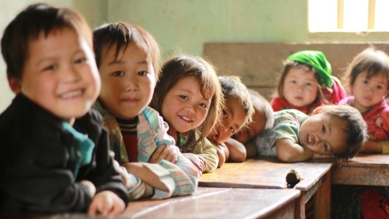
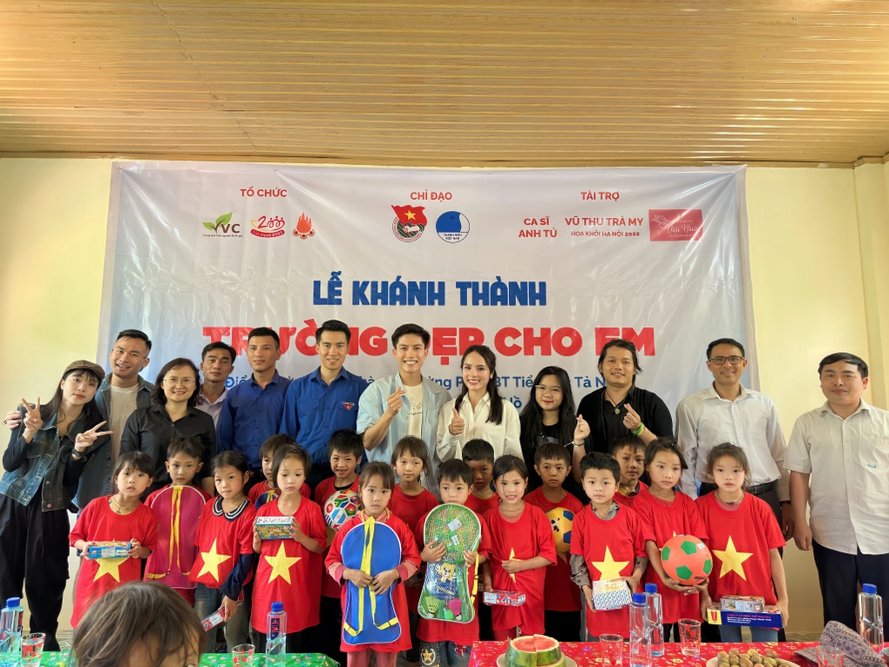
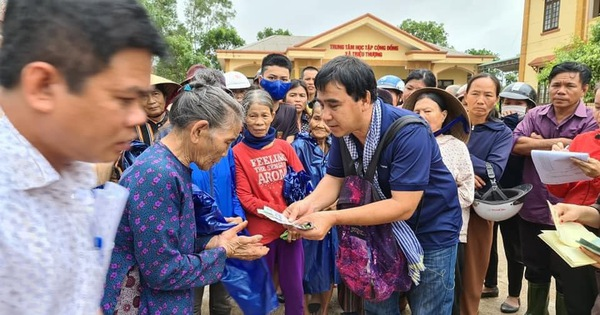
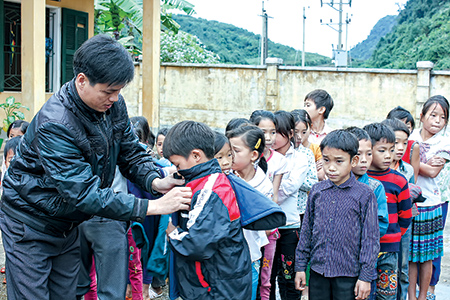
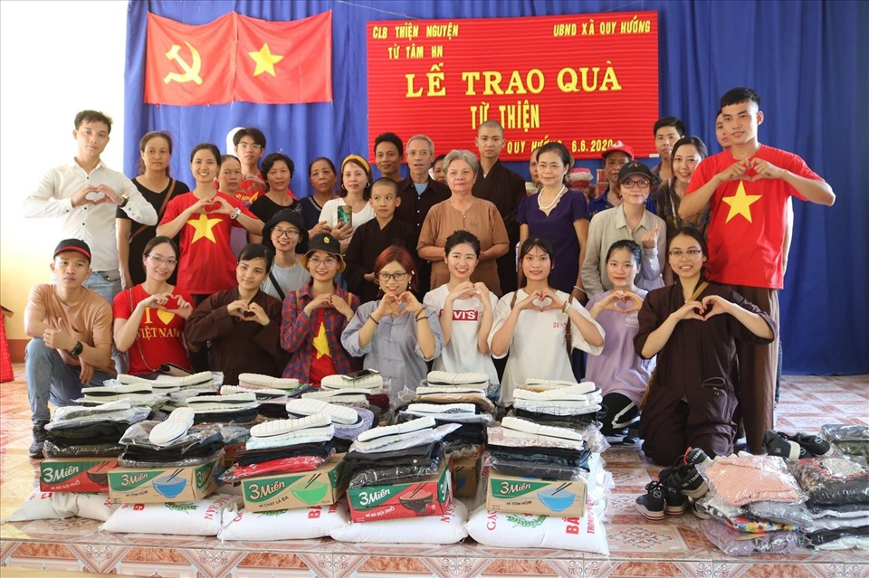

What We Do

We believe that education is both the means as well as the end to a better life the means because it empowers an individual to earn his/her livelihood and the end because it increases one's awareness on a range of issues - from healthcare to appropriate social behaviour to understanding one's rights - and in the process help him/her evolve as a better citizen. Education is the most effective tool which helps children build a strong foundation: enabling them to free themselves from the vicious cycle of ignorance, poverty and disease.

More than just providing help, we also focus on building community power. We promote autonomy and create opportunities for everyone to be independent and contribute to community development. Our charity fund is not only a source of spiritual support but also a financial and material source. We provide the necessary resources to help recipients achieve their goals and overcome difficulties. Please join us in sharing love and sacrifice to build an increasingly stronger community.

We volunteered at community centers, spent time volunteering at community centers to help people who needed support, such as teaching children, distributing food to the poor, or providing provide health care services for the elderly.
We have donated supplies and clothing, organized or participated in campaigns to donate supplies and clothing to people in difficult circumstances, such as orphans, homeless people, or shelters. relief center, Education and training support Donate books, school supplies or finances to support education and training for children and students in difficult circumstances.


We have participated in social projects, participating in social projects such as building houses for the poor, gardening at community gardens, or cleaning up the local environment, donating books. notebooks, school supplies or finances to support education and training for children and students in difficult circumstances.